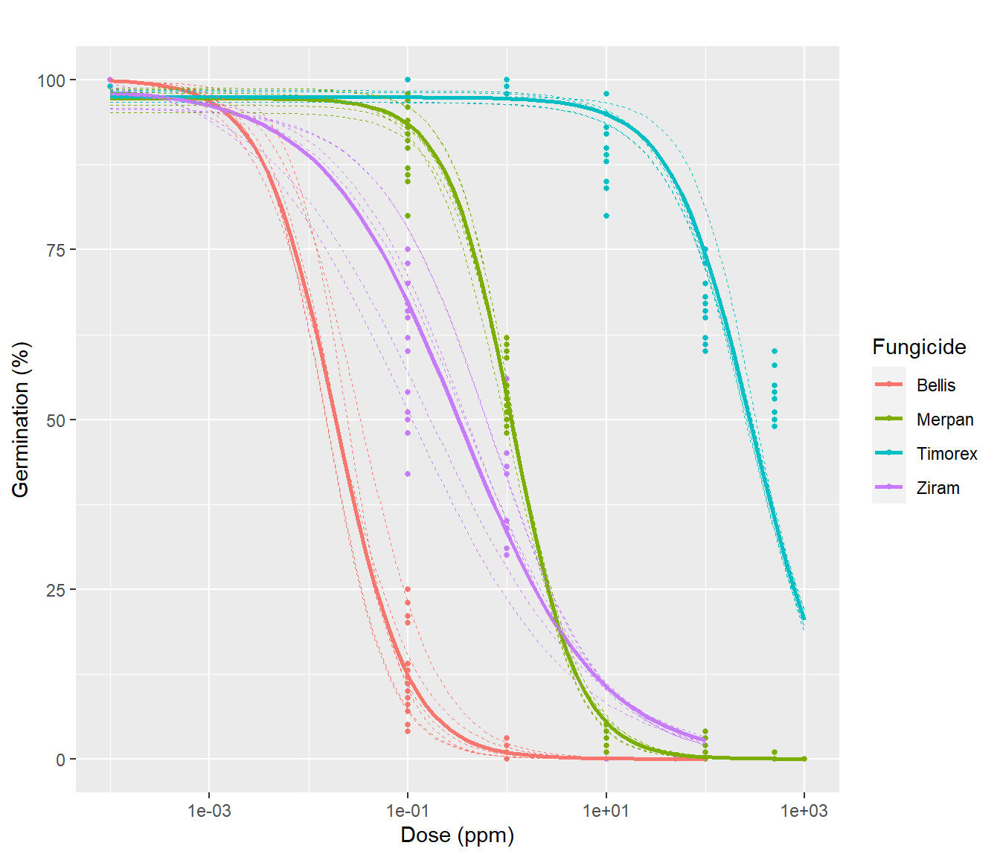

raw <- rio::import("data/mycelial_growth.csv", dec=",")
dat <- raw %>%
mutate_at(vars(dose, colony_diameter), as.numeric) %>%
mutate_at(vars(fungicide, strain, experiment, plate), as.factor) %>%
mutate(curve_id = interaction(fungicide:strain:experiment)) 1 In vitro experiments
1.1 Mycelial growth
Data scheme
dat %>% str'data.frame': 756 obs. of 7 variables:
$ fungicide : Factor w/ 4 levels "Bellis","Merpan",..: 1 1 1 1 1 1 1 1 1 1 ...
$ strain : Factor w/ 3 levels "S20","S23","S8": 2 2 2 1 1 1 3 3 3 2 ...
$ experiment : Factor w/ 3 levels "1","2","3": 1 1 1 1 1 1 1 1 1 1 ...
$ dose : num 0 0 0 0 0 0 0 0 0 100 ...
$ plate : Factor w/ 3 levels "1","2","3": 1 2 3 1 2 3 1 2 3 1 ...
$ colony_diameter: num 53 55 56 52 53 52 51 51 52 0 ...
$ curve_id : Factor w/ 36 levels "Bellis:S20:1",..: 4 4 4 1 1 1 7 7 7 4 ...ftable(xtabs(~ fungicide + strain + experiment + dose, dat)) dose 0 0.01 0.1 0.5 1 10 50 100 500 1000
fungicide strain experiment
Bellis S20 1 3 3 3 0 3 3 3 3 0 0
2 3 3 3 0 3 3 3 3 0 0
3 3 3 3 0 3 3 3 3 0 0
S23 1 3 3 3 0 3 3 3 3 0 0
2 3 3 3 0 3 3 3 3 0 0
3 3 3 3 0 3 3 3 3 0 0
S8 1 3 3 3 0 3 3 3 3 0 0
2 3 3 3 0 3 3 3 3 0 0
3 3 3 3 0 3 3 3 3 0 0
Merpan S20 1 3 0 3 0 3 3 0 3 3 3
2 3 0 3 0 3 3 0 3 3 3
3 3 0 3 0 3 3 0 3 3 3
S23 1 3 0 3 0 3 3 0 3 3 3
2 3 0 3 0 3 3 0 3 3 3
3 3 0 3 0 3 3 0 3 3 3
S8 1 3 0 3 0 3 3 0 3 3 3
2 3 0 3 0 3 3 0 3 3 3
3 3 0 3 0 3 3 0 3 3 3
Timorex S20 1 3 0 3 0 3 3 0 3 3 3
2 3 0 3 0 3 3 0 3 3 3
3 3 0 3 0 3 3 0 3 3 3
S23 1 3 0 3 0 3 3 0 3 3 3
2 3 0 3 0 3 3 0 3 3 3
3 3 0 3 0 3 3 0 3 3 3
S8 1 3 0 3 0 3 3 0 3 3 3
2 3 0 3 0 3 3 0 3 3 3
3 3 0 3 0 3 3 0 3 3 3
Ziram S20 1 3 0 3 3 3 3 3 3 0 0
2 3 0 3 3 3 3 3 3 0 0
3 3 0 3 3 3 3 3 3 0 0
S23 1 3 0 3 3 3 3 3 3 0 0
2 3 0 3 3 3 3 3 3 0 0
3 3 0 3 3 3 3 3 3 0 0
S8 1 3 0 3 3 3 3 3 3 0 0
2 3 0 3 3 3 3 3 3 0 0
3 3 0 3 3 3 3 3 3 0 0# per fungicide / strain
dat %>%
nest(data = c(dose, colony_diameter)) %>%
mutate(mod = map(data, ~broom::tidy(drm(colony_diameter~dose, fct = LL.3(), data = .))))%>%
unnest(c(mod))%>%
tibble()# per fungicide
dat %>%
nest(data = c(-fungicide)) %>%
mutate(mod = map(data, ~broom::tidy(drm(colony_diameter~dose, fct = LL.3(), data = .))))%>%
unnest(c(mod)) %>%
tibble()Meta-analysis approach
mod_mg <- metadrm(colony_diameter ~ dose,
data=dat,
fct=LL.3(),
ind=curve_id,
cid2=fungicide,
struct="UN")
summary(mod_mg)
Two-stage meta-analysis dose-response model
Model fitted: Log-logistic (ED50 as parameter) with lower limit at 0
Call:
metadrm(formula = colony_diameter ~ dose, fct = LL.3(), ind = curve_id,
data = dat, cid2 = fungicide, struct = "UN")
Variance estimates:
estim sqrt
tau^2.1 0.0023 0.0481
tau^2.2 8.1930 2.8623
tau^2.3 0.0001 0.0076
rho.b:(I rho.d:(I rho.e:(I
b:(Intercept) 1 -0.0949 0.9136
d:(Intercept) -0.0949 1 -0.4915
e:(Intercept) 0.9136 -0.4915 1
Coefficients:
Estimate Std.Err t value Pr(>|t|)
b:Bellis 5.7954e-01 1.8249e-02 31.7572 < 2.2e-16 ***
b:Merpan 3.6118e-01 1.8337e-02 19.6968 < 2.2e-16 ***
b:Timorex 3.4904e-01 3.2449e-02 10.7565 < 2.2e-16 ***
b:Ziram 3.9270e-01 2.0238e-02 19.4040 < 2.2e-16 ***
d:Bellis 5.1375e+01 9.8903e-01 51.9446 < 2.2e-16 ***
d:Merpan 5.2514e+01 1.0668e+00 49.2274 < 2.2e-16 ***
d:Timorex 4.9987e+01 1.3972e+00 35.7759 < 2.2e-16 ***
d:Ziram 5.3064e+01 1.1219e+00 47.3004 < 2.2e-16 ***
e:Bellis 2.9754e-02 2.7299e-03 10.8994 < 2.2e-16 ***
e:Merpan 2.4515e+01 1.6200e+00 15.1327 < 2.2e-16 ***
e:Timorex 1.1284e+02 2.2168e+01 5.0901 1.779e-06 ***
e:Ziram 6.4556e+00 6.1620e-01 10.4764 < 2.2e-16 ***
---
Signif. codes: 0 '***' 0.001 '**' 0.01 '*' 0.05 '.' 0.1 ' ' 1Estimates
ec50s <- ED(mod_mg, respLev=c(50)) %>% as.data.frame()
Estimated effective doses
Estimate Std. Error
e:Bellis:50 2.9754e-02 2.7299e-03
e:Merpan:50 2.4515e+01 1.6200e+00
e:Timorex:50 1.1284e+02 2.2168e+01
e:Ziram:50 6.4556e+00 6.1620e-01# coef_mod_mg <- summary(mod_mg) %>% data.frame %>%
# rownames_to_column("param") %>%
# separate(param, c("param", "fungicide"))
# ec50s <- coef_mod_mg %>% filter(param=="e")
# ec50sComparing effective dose levels for meta analysis
ed_comp <- EDcomp(mod_mg,
percVec=c(50),
percMat=rbind(c(1,1,1,1)),
interval="fieller") %>%
data.frame %>%
rownames_to_column("comp") %>%
rowwise() %>%
mutate(relative_to_one = f(Lower, Upper, 1)) # %>%
Estimated ratios of effect doses
Estimate Lower Upper
Bellis/Merpan:50/50 1.2137e-03 9.5935e-04 1.5105e-03
Bellis/Timorex:50/50 2.6369e-04 1.7897e-04 4.4300e-04
Bellis/Ziram:50/50 4.6091e-03 3.5352e-03 6.0262e-03
Merpan/Timorex:50/50 2.1726e-01 1.5163e-01 3.6084e-01
Merpan/Ziram:50/50 3.7976e+00 3.0366e+00 4.8414e+00
Timorex/Ziram:50/50 1.7479e+01 1.0384e+01 2.5875e+01 # as_huxtable() %>%
# set_number_format(1)As we compare EC50 ratios between fungicides, if the confidence interval does not contain 1, fungicides differ among them:
ed_comp %>%
ggplot()+
aes(x=comp, y=Estimate) +
geom_pointrange(aes(ymin = Lower, ymax = Upper, col=relative_to_one))+
geom_hline(yintercept = 1, linetype=2)+
# scale_y_log10()+
coord_flip() +
labs(col="Relative to 1")dat %>%
ggplot()+
aes(x=dose+0.0001, y=colony_diameter, col=fungicide) +
geom_point(size=1) +
geom_smooth(method = drm,
method.args = list(fct = L.3()), se = F) +
geom_smooth(aes(group=curve_id), size=.3, linetype=2,
method = drm,
method.args = list(fct = L.3()), se = F) +
labs(title= "", x = "Dose (ppm)", y = "Colony diameter (cm)", col= "Fungicide") +
scale_x_log10() 
1.2 Spore germination
germi_raw <- rio::import("data/germination.csv", dec=",")
germi_dat <- germi_raw %>%
mutate_at(vars(dose), as.numeric) %>%
mutate_at(vars(fungicide, strain, repetition, replicate), as.factor) %>%
mutate(curve_id = interaction(fungicide:strain:repetition)) %>%
mutate(dose_ = dose+0.0001)Data scheme
germi_dat %>% str'data.frame': 468 obs. of 12 variables:
$ fungicide : Factor w/ 4 levels "Bellis","Merpan",..: 1 1 1 1 1 1 1 1 1 1 ...
$ strain : Factor w/ 3 levels "S20","S23","S8": 2 2 2 1 1 1 3 3 3 2 ...
$ repetition : Factor w/ 2 levels "1","2": 1 1 1 1 1 1 1 1 1 1 ...
$ replicate : Factor w/ 3 levels "1","2","3": 1 2 3 1 2 3 1 2 3 1 ...
$ dose : num 100 100 100 100 100 100 100 100 100 50 ...
$ germinated_conidia : int 0 0 0 0 0 0 0 0 0 0 ...
$ total_conida : int 100 100 100 100 100 100 100 100 100 100 ...
$ non_germinated_conidia: int 100 100 100 100 100 100 100 100 100 100 ...
$ inhibition_perc : int 100 100 100 100 100 100 100 100 100 100 ...
$ germination_percent : int 0 0 0 0 0 0 0 0 0 0 ...
$ curve_id : Factor w/ 24 levels "Bellis:S20:1",..: 3 3 3 1 1 1 5 5 5 3 ...
$ dose_ : num 100 100 100 100 100 ...ftable(xtabs(complete.cases(germination_percent)~fungicide+dose, data=germi_dat)) dose 0 0.1 1 10 50 100 500 1000
fungicide
Bellis 18 18 18 18 18 18 0 0
Merpan 18 18 18 18 0 18 18 18
Timorex 18 18 18 18 0 18 18 18
Ziram 18 18 18 18 18 18 0 0ftable(xtabs(complete.cases(germination_percent)~fungicide+dose+strain , data=germi_dat)) strain S20 S23 S8
fungicide dose
Bellis 0 6 6 6
0.1 6 6 6
1 6 6 6
10 6 6 6
50 6 6 6
100 6 6 6
500 0 0 0
1000 0 0 0
Merpan 0 6 6 6
0.1 6 6 6
1 6 6 6
10 6 6 6
50 0 0 0
100 6 6 6
500 6 6 6
1000 6 6 6
Timorex 0 6 6 6
0.1 6 6 6
1 6 6 6
10 6 6 6
50 0 0 0
100 6 6 6
500 6 6 6
1000 6 6 6
Ziram 0 6 6 6
0.1 6 6 6
1 6 6 6
10 6 6 6
50 6 6 6
100 6 6 6
500 0 0 0
1000 0 0 0Meta-analysis
mod_germ <- metadrm(germination_percent ~ dose_,
data=germi_dat,
fct=LL.3(),
ind=curve_id,
cid2=fungicide,
struct="UN")
summary(mod_germ)
Two-stage meta-analysis dose-response model
Model fitted: Log-logistic (ED50 as parameter) with lower limit at 0
Call:
metadrm(formula = germination_percent ~ dose_, fct = LL.3(),
ind = curve_id, data = germi_dat, cid2 = fungicide, struct = "UN")
Variance estimates:
estim sqrt
tau^2.1 0.0024 0.0494
tau^2.2 0.0063 0.0792
tau^2.3 0.0001 0.0090
rho.b:(I rho.d:(I rho.e:(I
b:(Intercept) 1 1.0000 1.0000
d:(Intercept) 1.0000 1 1.0000
e:(Intercept) 1.0000 1.0000 1
Coefficients:
Estimate Std.Err t value Pr(>|t|)
b:Bellis 1.0899e+00 8.5417e-02 12.7594 < 2.2e-16 ***
b:Merpan 1.3070e+00 5.6028e-02 23.3286 < 2.2e-16 ***
b:Timorex 1.0750e+00 1.2498e-01 8.6014 4.650e-12 ***
b:Ziram 6.1460e-01 4.1545e-02 14.7935 < 2.2e-16 ***
d:Bellis 9.9899e+01 2.3603e-01 423.2484 < 2.2e-16 ***
d:Merpan 9.7988e+01 5.3055e-01 184.6913 < 2.2e-16 ***
d:Timorex 9.7660e+01 1.7236e+00 56.6592 < 2.2e-16 ***
d:Ziram 9.9054e+01 2.0387e+00 48.5862 < 2.2e-16 ***
e:Bellis 2.3170e-02 5.1014e-03 4.5419 2.744e-05 ***
e:Merpan 1.1356e+00 2.4159e-02 47.0036 < 2.2e-16 ***
e:Timorex 2.8903e+02 3.4065e+01 8.4846 7.338e-12 ***
e:Ziram 1.5577e-01 2.7043e-02 5.7600 3.080e-07 ***
---
Signif. codes: 0 '***' 0.001 '**' 0.01 '*' 0.05 '.' 0.1 ' ' 1Estimates
ec50s_g <- ED(mod_germ, respLev=c(50)) %>% as.data.frame()
Estimated effective doses
Estimate Std. Error
e:Bellis:50 2.3170e-02 5.1014e-03
e:Merpan:50 1.1356e+00 2.4159e-02
e:Timorex:50 2.8903e+02 3.4065e+01
e:Ziram:50 1.5577e-01 2.7043e-02ec50s_g| Estimate | Std. Error |
| 0.0232 | 0.0051 |
| 1.14 | 0.0242 |
| 289 | 34.1 |
| 0.156 | 0.027 |
germ_comp <- EDcomp(mod_germ,
percVec=c(50),
percMat=rbind(c(1,1,1,1)),
interval="fieller") %>%
data.frame %>%
rownames_to_column("comp") %>%
rowwise() %>%
mutate(relative_to_one = f(Lower, Upper, 1))
Estimated ratios of effect doses
Estimate Lower Upper
Bellis/Merpan:50/50 2.0404e-02 1.1405e-02 2.9477e-02
Bellis/Timorex:50/50 8.0165e-05 4.3407e-05 1.2636e-04
Bellis/Ziram:50/50 1.4875e-01 7.7874e-02 2.6041e-01
Merpan/Timorex:50/50 3.9289e-03 3.1644e-03 5.1559e-03
Merpan/Ziram:50/50 7.2900e+00 5.3920e+00 1.1188e+01
Timorex/Ziram:50/50 1.8555e+03 1.2413e+03 2.9785e+03# germ_compcoef_mod_germ <- summary(mod_germ) %>% data.frame %>%
rownames_to_column("param") %>%
separate(param, c("param", "fungicide"))
Two-stage meta-analysis dose-response model
Model fitted: Log-logistic (ED50 as parameter) with lower limit at 0
Call:
metadrm(formula = germination_percent ~ dose_, fct = LL.3(),
ind = curve_id, data = germi_dat, cid2 = fungicide, struct = "UN")
Variance estimates:
estim sqrt
tau^2.1 0.0024 0.0494
tau^2.2 0.0063 0.0792
tau^2.3 0.0001 0.0090
rho.b:(I rho.d:(I rho.e:(I
b:(Intercept) 1 1.0000 1.0000
d:(Intercept) 1.0000 1 1.0000
e:(Intercept) 1.0000 1.0000 1
Coefficients:
Estimate Std.Err t value Pr(>|t|)
b:Bellis 1.0899e+00 8.5417e-02 12.7594 < 2.2e-16 ***
b:Merpan 1.3070e+00 5.6028e-02 23.3286 < 2.2e-16 ***
b:Timorex 1.0750e+00 1.2498e-01 8.6014 4.650e-12 ***
b:Ziram 6.1460e-01 4.1545e-02 14.7935 < 2.2e-16 ***
d:Bellis 9.9899e+01 2.3603e-01 423.2484 < 2.2e-16 ***
d:Merpan 9.7988e+01 5.3055e-01 184.6913 < 2.2e-16 ***
d:Timorex 9.7660e+01 1.7236e+00 56.6592 < 2.2e-16 ***
d:Ziram 9.9054e+01 2.0387e+00 48.5862 < 2.2e-16 ***
e:Bellis 2.3170e-02 5.1014e-03 4.5419 2.744e-05 ***
e:Merpan 1.1356e+00 2.4159e-02 47.0036 < 2.2e-16 ***
e:Timorex 2.8903e+02 3.4065e+01 8.4846 7.338e-12 ***
e:Ziram 1.5577e-01 2.7043e-02 5.7600 3.080e-07 ***
---
Signif. codes: 0 '***' 0.001 '**' 0.01 '*' 0.05 '.' 0.1 ' ' 1# ec50_germ <- coef_mod_germ %>% filter(param=="e")
# ec50_germgerm_comp %>%
ggplot()+
aes(x=comp, y=Estimate) +
geom_pointrange(aes(ymin = Lower, ymax = Upper, col=relative_to_one))+
geom_hline(yintercept = 1, linetype=2)+
coord_flip() +
labs(col="Relative to 1")germi_dat %>%
ggplot()+
aes(x=dose+0.0001, y=germination_percent, col=fungicide) +
scale_x_log10() +
geom_point(size=1) +
geom_smooth(method = drm,
method.args = list(fct = L.3()), se = F) +
geom_smooth(aes(group=curve_id), size=.3, linetype=2,
method = drm,
method.args = list(fct = L.3()), se = F) +
labs(title= "", x = "Dose (ppm)", y = "Germination (%)", col= "Fungicide") 